正君
之教

依据《中学德育大纲》《中小学文明礼仪》《中国学生素养2016》《中小学德育工作指南》（2017）和深圳中学德育目标要求，针对初三阶段德育发展和备战中考的主题，结合8班学生年龄特点和班级定位，制定本学期工作大纲。
一、任务目标
立德树人，全面发展。培养学生的竞争意识、拼搏精神、战斗素养；培养持之以恒、用心专一、勤敬有为，修己达人之德行；培养团队合作、协调关系、解决问题、革故鼎新的能力；培养管控情绪、理性表达、尊师重友、和睦家人的品质。
二、步骤内容
挑逆——心兵不乱：明确大方向、剔除小毛病、做好眼前事；
战狼——孤胆英雄：挣脱旧圈子、打造强学科、鼓励出奇兵；
竞骛——排山倒海：全科齐推进、精兵变强军、冲锋壮气势；
争鼎——笑傲江湖：优势变胜势、从容毫厘间、正大自光明。
（一）磨砺意志：核心是“挑战”，挑战自我，完善自我。让每一个学生都在实现个人目标
的征途上奔跑。
（二）合作学习：推进学科小组合作学习，发扬管理育人、协同育人之功。
（三）量化管理：分为四个学段，进行量化考核；针对性要强，加强个性化，差异化，有反馈、有跟进、有变化。
（四）综合能力：在思维能力、备考能力、审美能力、协作能力、竞争能力等方面呈现出不一般的素质。
（五）文化生活：家长群体将发挥主导作用和资源优势，定期举行与成长有关的互动活动，深化学习的情趣。合力打造亲子文化，促进学生身心健康发展。
三、组织落实
（一）加强班团两委和家委的协作，加强教师团队的合作；
（二）科学施策，问题导向，务实、落实，切实解决问题；
（三）线上线下，课内课外，合理推进，团结高效。
四、提醒注意
（一）分清主次，不要缺位、错位、越位；
（二）积极关注身心健康，毋意、毋必、毋固、毋我。
附：班级领导团队——挑战竞争，青春无悔
团支部：
骏（团支书） 悦（团宣委）
班委会：
班长：艺 副班长：曹
学习委员：柯 体育委员： 慈（总负责） 焓 云 宣传委员：悦
江（协理）文娱委员：玥 生活委员：绚 纪律委员：承 电教管理员：圳
静校管理员：彩（总负责）培、昶、庞、权
卫生委员：灏（总负责） 承、彩
学习小组：仁（付）、义（昕）、礼（欧）、智（焓）、信（柯）
家委会——
会长：黎女士（悦然妈）
学习部：宇杰妈，悦然妈，容达妈、扬柯妈 ==
文体部：瑾禹妈，静怡妈，毓焓妈==
宣传部：婧语妈，哲宇妈
财务部：绚儿妈，宝仪妈==
生涯部：华慈妈，谢彤妈，元曦妈
家长义工组
：
仁（瑾禹妈 悦然妈 华慈妈）
义（宝仪妈 静怡妈）礼（绚儿妈 宇杰妈）智（婧语妈 毓焓妈 谢彤妈）信 （容达妈 哲宇妈 扬柯妈）
1、线上试卷讲评
1月5、6号，年级各备课组安排线上试卷讲评。
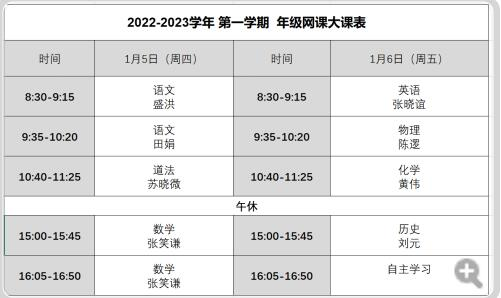
2、期末诊断成绩查询
1月6日开放期末诊断成绩查询（1-10）。
A+4人：付、柯、骏、玥
A11人：艺、曦、云、昶、慈、位、圳、毛、毓、郑、语
3、班级评优
优干：慈、付、曹
文明规范生：艺、骏、昶、云、绚、位、柯、毛、欧、玥、昕、辉、鑫、
庞、哲、毓、谢、江、姚、白
12月29-30日，年级组织期末诊断。41人考全科（含线上线下），3人未考全，10人全未考。
2、考前准备
27日，返校拿准考证（线下）做核酸。
居家复习。
3、领取寒假作业资料
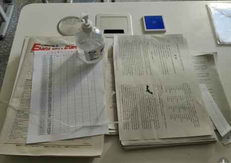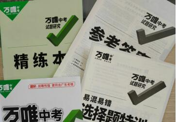
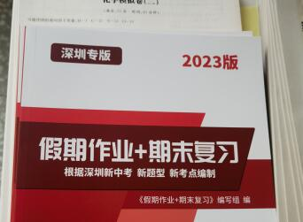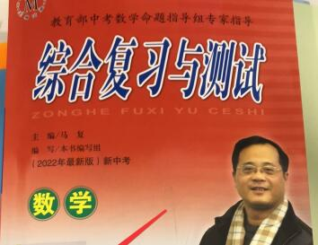
4、班级线上评优活动
27日晚，家委组织线上文明规范生评选活动。投票结果：
慈、付、曹、艺、骏、昶、云、绚、位、柯、毛、欧、玥、昕、辉、鑫、 庞、哲、悦、毓、谢
5、年级线上家长会
30日晚，年级召开线上家长会。
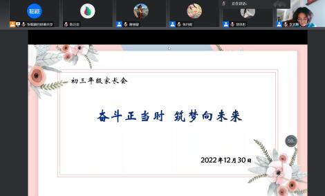
周一班会课时间，学校组织线上集会（运动会总结）：青春燃梦想，拼搏耀荣光
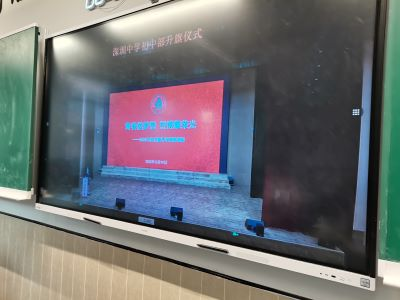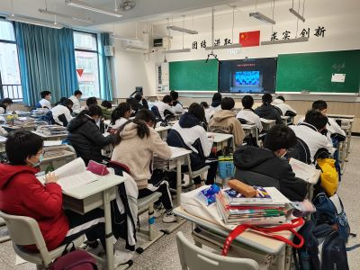
2、唯一体验
周一这天，全校只有我班线下上课，31人到班。上课，静校，午餐、做核酸（结果全阴）
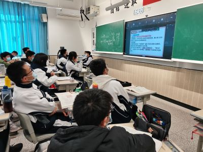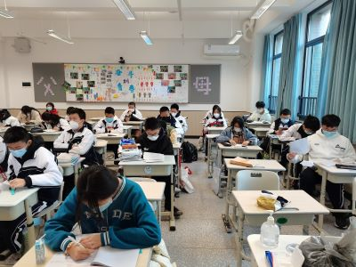
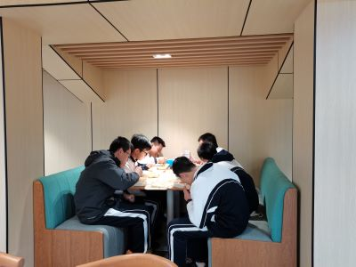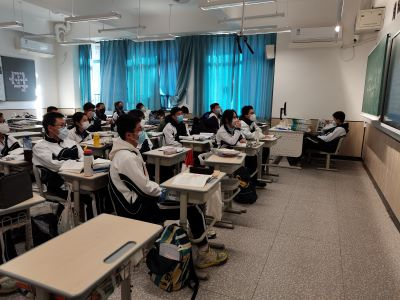
3、居家线上学习
周二至周五依然线上学习
4、启动综合评价
5、申报期末阶段评估方式
期末阶段评估分不考、线上考、线下考。
因为疫情，班级居家网课。
2、混合式教学
周四周五两天，网课为主，个别同学自愿返校线下学习。
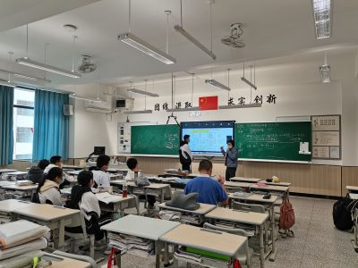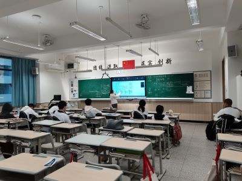
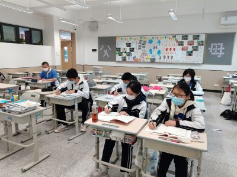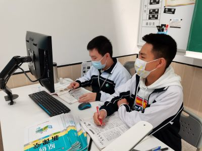
3、学校组织线上防疫教育
1、年级集会
周一晨，年级集会，主题：少年逐梦，当不负韶华。
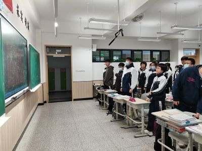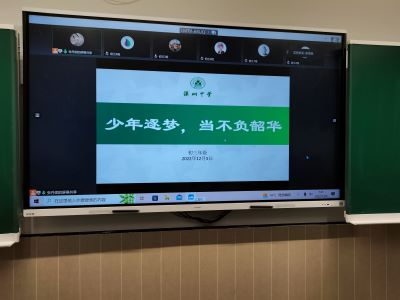
2、英语快速阅读比赛
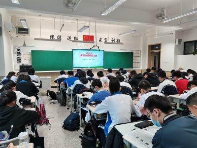
3、学校发放校庆礼包
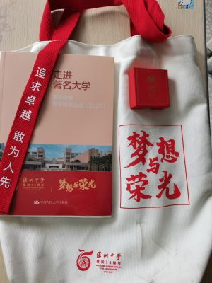
4、运动会（嘉年华）
12月9日，初三年级运动会（嘉年华）在初中部操场举行。总分105，第9名。篮球上篮接力第一、女子800米第一，男子800米第二。（更多照片见班级Q群）
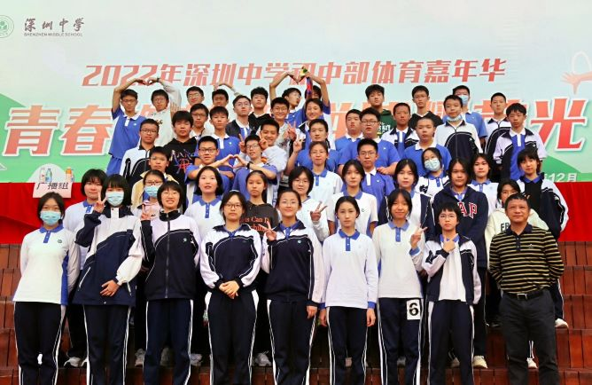
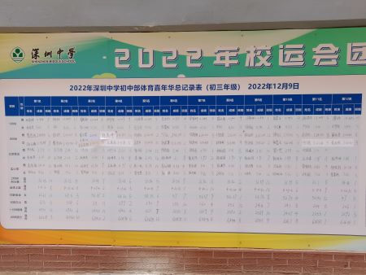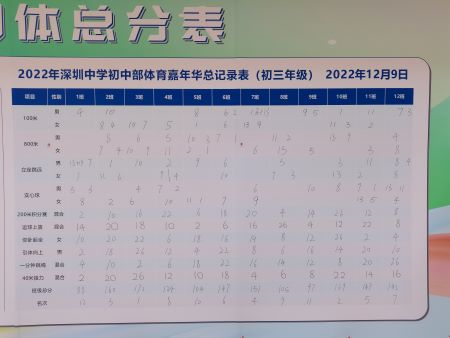
 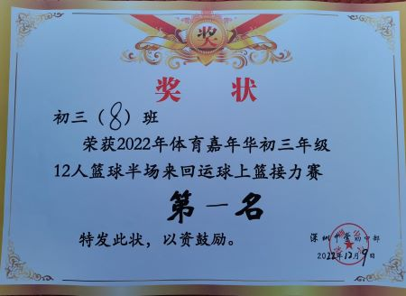
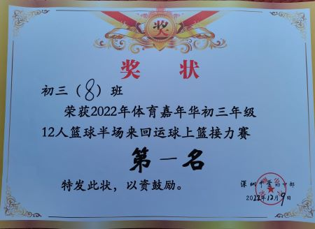
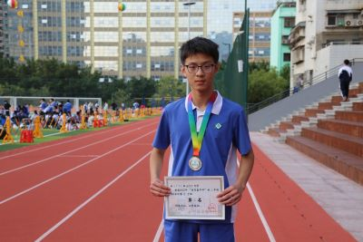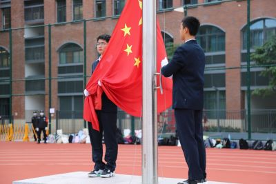
5、班级疫情
周末，有报告不适，经核酸检测或抗原自测，出现阳性。
经上报，拟定班级进入居家学习模式。
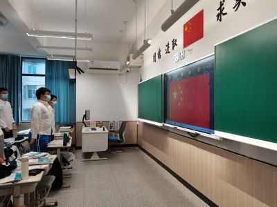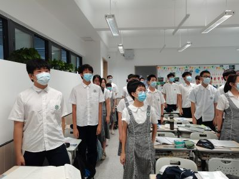
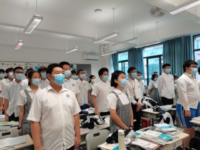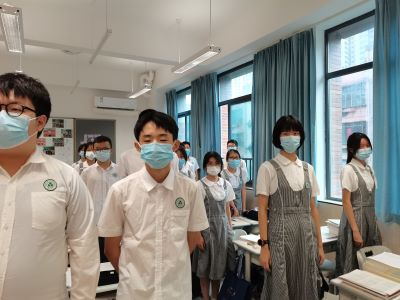
2、林昶荣市赛获奖
3、坚持做核酸
4、信息课上完成评教
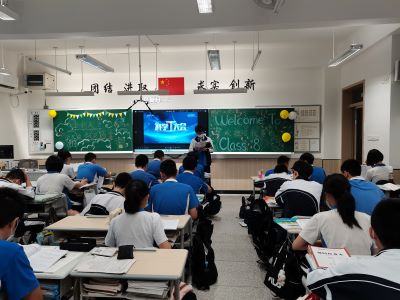
2、重新启用“课堂记录本”
（1）晨检通报
（2）静校通报
（3）课堂情况评估与记录：当天通报，当天整改
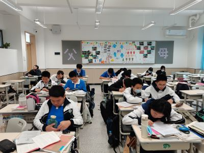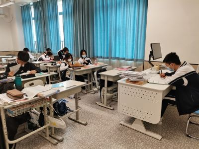
3、关注体育锻炼
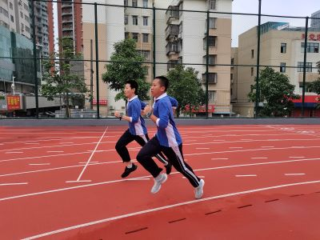
4、坚持做核酸
5、家长来访
周一晨会，生命主题教育：长风破浪会有时——让生命更有韧性
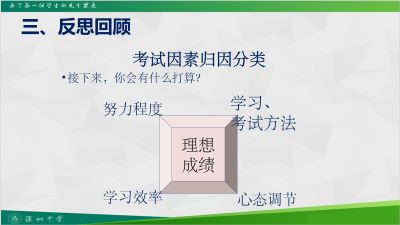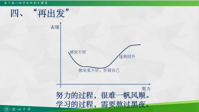
2、板报一等奖
本期板报创作人员：悦、江、姚、达、栩、权
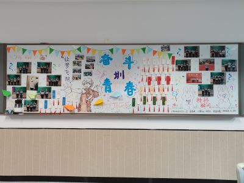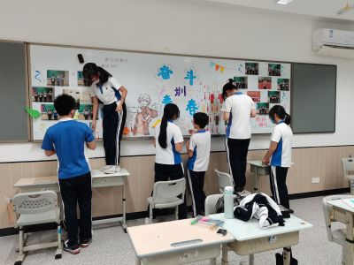
3、家长会
11月18日晚上 7：30-10：00，在学校教室组织了以“全新起点 务实为要”为主题的家长会。会议流程包括心理辅导报告、学科学情通报、班级管理通报。
学生义工：沈、汪、权、悦、丘、姚、达、江。
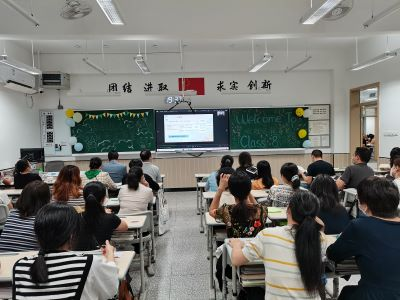

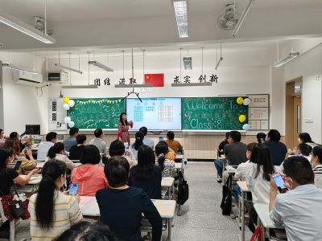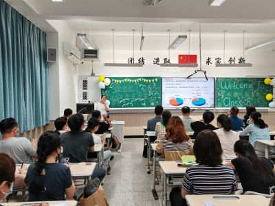
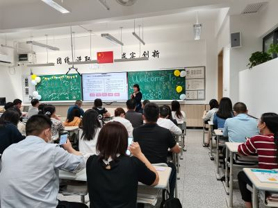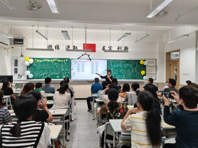
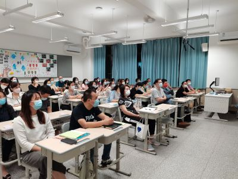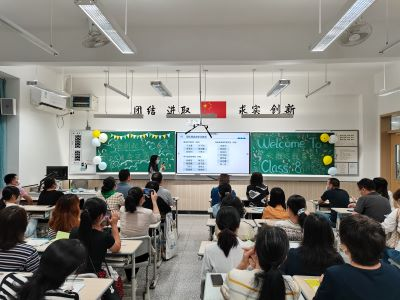
4、“学宪法、讲宪法”活动
家委负责完成
5、运动会报名
11月7日晨，年级组织期中总结表彰。
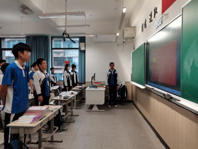

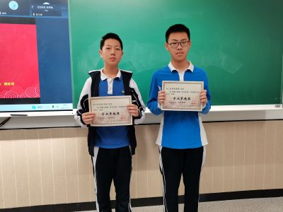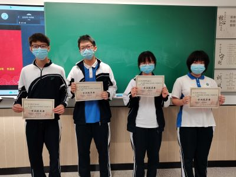
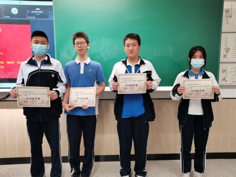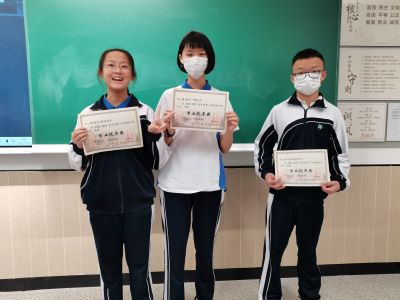
1031、1101两天，期中考试。
（1）1024晨，学生处腾讯会议直播集会，主题是践行二十大精神。宣布容达同学美术作品获奖。
（2）观看《领航》第16集

2、英语听说考试
3、体育考试
4、发展团员
通过团章考试后，我班4位同学（艺、付、毛、云）被正式批准入团。
5、小说人物简评活动
6、大课间跑步
7、期中考前诚信教育
8、接种流感疫苗
1、主题班会：
（1）喜迎二十大，学习报告金句；
（2）观看《领航》第2集；
2、达绘画作品获奖
3、年级诗歌默写比赛
付、毛、嘉满分。
4、青骄第二课堂：禁毒教育
家长和孩子共同完成，家委协助。
5、校园文明问题
食堂用餐插队，已批评教育，支部带头自查自省。
6、小说人物简评活动
10月10日，按学校统一安排，进行爱国主义教育。
2、大课间跑步启动
3、生地会考成绩
付、慈满分，9个A+，24个A。
4、选拔新团员
10月11日，团支部选拔新团员。通过自我推荐和全班投票，选出6位同学：艺、付、毛、江、焓、云。
5、宣委布置右侧白板
6、 校园文明问题
体育课上出现情绪管控有失文雅的现象，学生处、家长协同进行了批评教育。
7、诗歌朗诵与简评活动

9月26日，年级统一安排对上学期期末诊断与本学期开学诊断进行总结表彰。
2、布置教室前左侧白板
9月28日，宣委悦完成教室前左侧白板布置。
3、全班书写奋斗书签
9月29日上午，团支部组织全体同学书写奋斗书签活动。
4、网课
9月29日下午，30日全天，因疫情改为线上教学。
5、 防疫
（1）9月26-27，骏、悦两同学居家
（2）9月29日下午，罗湖区疫情加重，学校停课。
6、谈话
（1）责任
（2）沟通
（3）安抚
7、诗歌朗诵与简评活动
9月19日，年级组织了语数英物四个学科检测。
前十：付、艺、曹、慈、焓、圳、昶、曦、位、玥
2、开学典礼
9月19日下午4：40，足球场，学校组织了以“辉光日新、筑梦未来”为主题的开学典礼。朱校长讲话。我班荣获“先进班集体奖”和“腾讯优秀团队奖”。林同学获“阳光少年”称号。
3、班委微调通报（通过）
9月20日第三节课，班长通报了网课期间线上班委微调的过程与结果，全体同学投票通过（15票反对）。并组织全班同学合影（沈同学病假）
4、数学培训
加入名单：付、艺、曹、慈、欧。
5、班团朗诵

6、其他事务
（1）家委收集多条意见和建议（已反馈给学生处）
（2）静校名单确定（28人）
（3）加强考勤管理
（4）加强保洁管理
（5）加强核酸检测提示
（6）加强作业管理
（7）加强课堂纪律管理
（8）个别学生问题处理
9月16日（周五），按学校安排，上午8：30-10：00，初三同学返校，开启校园正常学习模式。
2、 朱校长视察初中部复课返校工作，走进我班，亲切询问，并勉励同学们“天天进步”！
3、线上学习
0913-0915（周二到周四），线上教学。
4、防疫
做好返校前的各项监测报告
1、线上主题班会
9月5日晨，线上主题班会：一小步与一大步
2、双节祝福（视频）
9月10日，教师节，中秋节，家委组织各组学生在云端送上节日祝福，质朴感人。
3、班级公众号第15期发布：中秋佳节致敬我们最可爱的老师
4、网课情况
（1）考勤
（2）作业
（3）寄书
5、中秋休假
9月10-12日，休假。
6、防疫
继续坚持每日健康监测，每日核酸。
9月1日8点，班级通过classin在线教室组织了本学期的第一次主题班会：奋斗是青春的底色。
2、线上教学
9月1-2号，classin平台线上教学启动，整体正常。本学期英语、物理、历史三科教师有变动，新增化学科。
3、线上团课：禁毒教育
9月1日晚，应团委要求，组织学生线上观看禁毒团课。
4、线上班干部会议
9月3日晚8：30，班委在腾讯会议上组织班委会议，选出团支部书记，班委换届。会议由班长主持。
5、防疫
因疫情加重，家委积极配合每日健康监测报告。
6、暑期生活回放
班级公众号第14期发布：我们的暑假，活力十足，乐趣无限
1、疫情突变，暂缓开学，准备网课
8月29日上午，紧急通知，学校暂缓开学，学生居家。
8月30日上午，学校通知，31号晚召开线上家长会。下载classin线上教室，准备9月1-2号上网课。
8月31日晚，学生处组织了线上家长会，对家长进行了新校园的介绍（王老师）和新学期学生心理调适指导（黄老师）
2、喜报
（1）班级被评为“先进班集体”，荣获“腾讯深中优秀团队奖”。
（2）林昶荣同学荣获校级“阳光少年”称号。
（广东省第十三届中学生运动会羽毛球比赛亚军奖）
3、提示：
（1）完成暑假作业
（2）整理暑期学习成果
（3）制定新学期计划
（4）准备开学语数英物评估
（5）调整作息时间
（6）加强体育锻炼
（7）做好防疫
（8）迎接新学期新生活
4、家委会
（1）线上分享学生暑期生活（为此，8月24日晚8点召开班委+家委线上会议）
（2）调查学生开学前学习与身心状态
初三：挑战竞争 青春无悔
czjszsz@qq.com